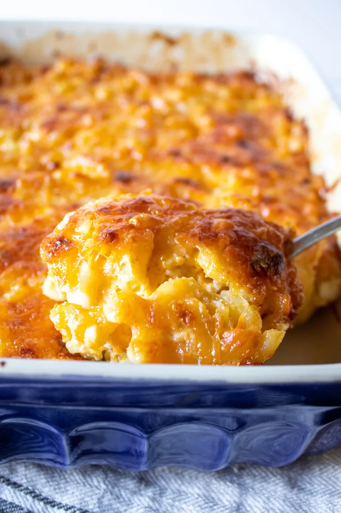

World's Best Mac-and-cheese

Creamy baked southern-style macaroni and cheese, a cheesy baked casserole and soul food classic.
I've lived in St. Louis for some time now, and as I've said before, it's very "southern" here in terms of cooking. One of our favorite soul food restaurants had the best mac and cheese, and that would be Sweetie Pie's. Miss Robie's recipe is easily found on the web and the local paper has published a paired down recipe for the home cook.
- Cook and drain elbow macaroni and place in baking dish or pan.
- Make the custard mixture by whisking together milk, evaporated milk and eggs and some seasoning, pour mixture over macaroni.
- Add the butter, sour cream and three cheeses and stir to combine well.
- Top with more grated cheese and bake until bubbly and top is browned.